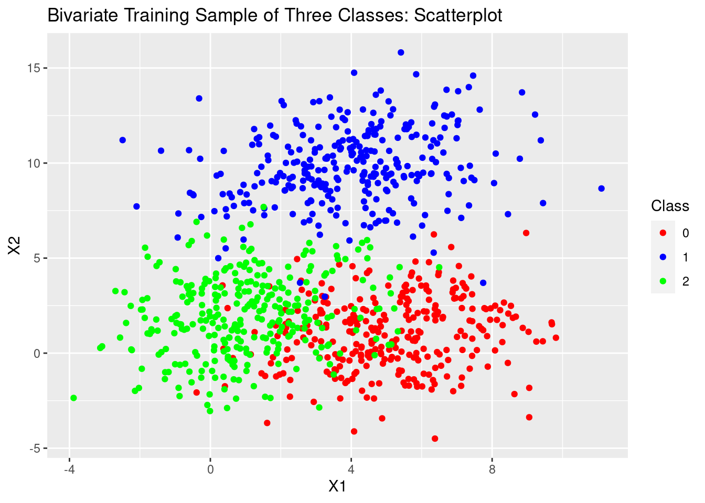
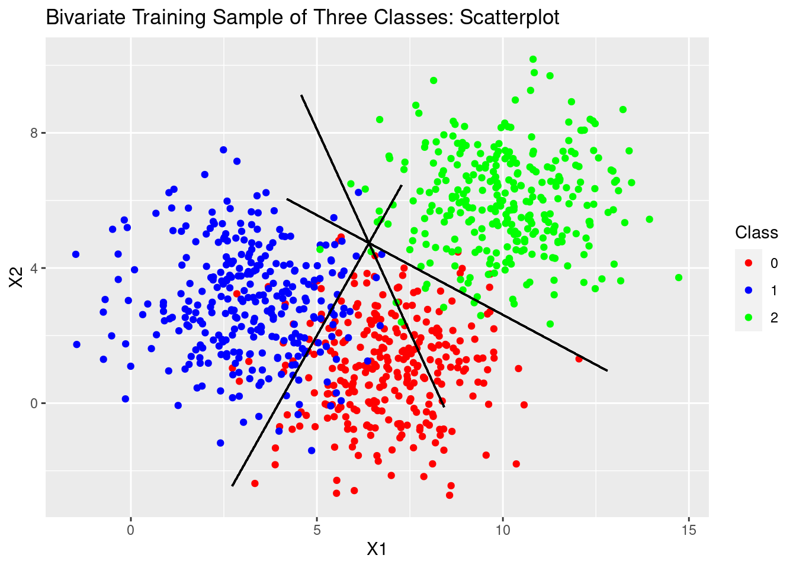
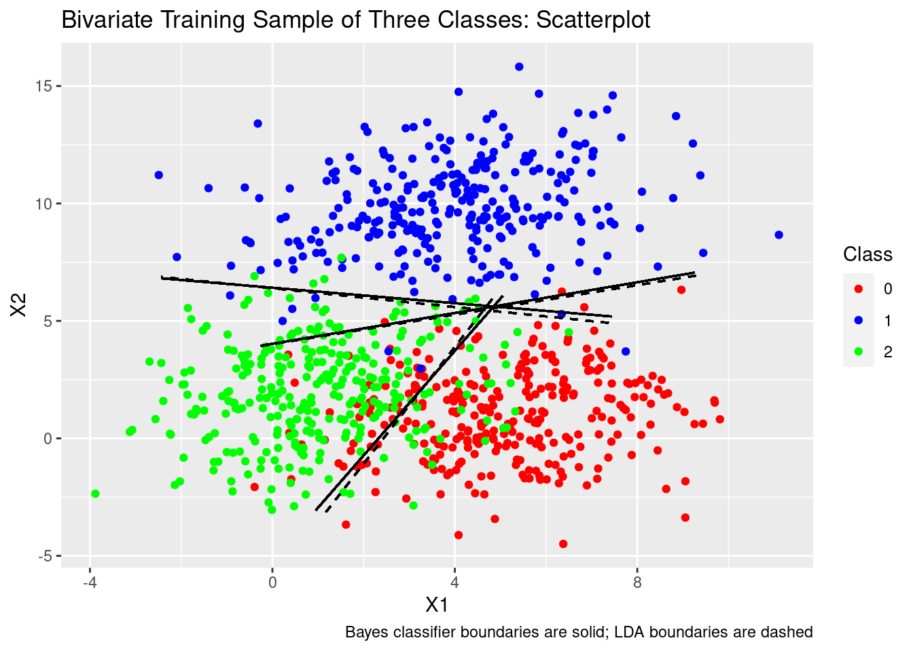

This example walks through using linear discriminant analysis to classify observations in a three-class multivariate setting with (idealized) generated data. I’d suggest reading the univariate LDA example first.
Though not shown here, this example uses the tidyverse and MASS packages.
We’ll generate data with three possible outcome classes (coded as 0, 1, and 2) with two independent variables/predictors.
We’ll use MASS’s mvnorm function to sample from a multivariate normal distribution. Throughout this example I’ll refer to the first variable as X1 and the second variable as X2. For each class we’ll construct a vector of means for X1 and X2, randomly sampled integers between 1 and 10:
X1_means <- sample.int(10, 3, replace = FALSE)
X2_means <- sample.int(10, 3, replace = FALSE)
pop_mean_c0_X1 <- X1_means[1]
pop_mean_c1_X1 <- X1_means[2]
pop_mean_c2_X1 <- X1_means[3]
pop_mean_c0_X2 <- X2_means[1]
pop_mean_c1_X2 <- X2_means[2]
pop_mean_c2_X2 <- X2_means[3]
mu_c0 <- c(pop_mean_c0_X1, pop_mean_c0_X2)
mu_c1 <- c(pop_mean_c1_X1, pop_mean_c1_X2)
mu_c2 <- c(pop_mean_c2_X1, pop_mean_c2_X2)Remember that in the univariate case LDA assumes equal variance for each class so in the multivariate case LDA assumes equal covariance for each class, meaning that the population covariance matrices for each class are identical (they also need to be positive semi-definite). For our data to be sampled from distributions with this idealized property, we’ll construct a single covariance matrix (which we’ll call pop_sigma) to use when sampling our data:
pop_corr <- runif(1, 0, 1)
pop_var <- runif(1, 0, 10)
pop_sigma <- matrix(c(pop_var, pop_corr,
pop_corr, pop_var), 2, 2)In this particular example our common covariance matrix looks like
## [,1] [,2]
## [1,] 2.37429323 0.03586445
## [2,] 0.03586445 2.37429323Now that we have our variable- and class-specific means and a common covariance matrix we can use mvnorm to generate our sample data. We’ll create equally-sized train and test sets with 300 observations in each of our three classes and bind our X1 and X2 samples together with our outcome set into a data frame.
n <- 300
c0_train <- mvrnorm(n = n,
mu = mu_c0,
Sigma = pop_sigma)
c1_train <- mvrnorm(n = n,
mu = mu_c1,
Sigma = pop_sigma)
c2_train <- mvrnorm(n = n,
mu = mu_c2,
Sigma = pop_sigma)
c0_test <- mvrnorm(n = n,
mu = mu_c0,
Sigma = pop_sigma)
c1_test <- mvrnorm(n = n,
mu = mu_c1,
Sigma = pop_sigma)
c2_test <- mvrnorm(n = n,
mu = mu_c2,
Sigma = pop_sigma)
train_sample_df <- bind_rows(
tibble(y = 0,
X1 = c0_train[,1],
X2 = c0_train[,2]),
tibble(y = 1,
X1 = c1_train[,1],
X2 = c1_train[,2]),
tibble(y = 2,
X1 = c2_train[,1],
X2 = c2_train[,2])
)
test_sample_df <- bind_rows(
tibble(y = 0,
X1 = c0_test[,1],
X2 = c0_test[,2]),
tibble(y = 1,
X1 = c1_test[,1],
X2 = c1_test[,2]),
tibble(y = 2,
X1 = c2_test[,1],
X2 = c2_test[,2])
)What do our data look like? We can easily create scatterplots:
train_sample_scatter <- ggplot(train_sample_df) +
geom_point(aes(x = X1, y = X2, color = as.factor(y))) +
scale_color_manual(values = c("red", "blue", "green"),
name = "Class") +
labs(title = "Bivariate Training Sample of Three Classes: Scatterplot")
test_sample_scatter <- ggplot(test_sample_df) +
geom_point(aes(x = X1, y = X2, color = as.factor(y))) +
scale_color_manual(values = c("red", "blue", "green"),
name = "Class") +
labs(title = "Bivariate Test Sample of Three Classes: Scatterplot")Looking only at the training data for now:

Like with the univariate LDA example we will compare performance against the Bayes classifier. This time, because we have more than one independent variable/predictor, building the classifier and displaying the decision boundaries won’t be as straightforward as in the univariate LDA case (though the fundamental concept is the same).
Also like in the univariate example, we will use a discriminant function to determine which class to assign to a given observation. The discriminant functions are exactly the same and are derived in the same way, except that since we have more than one independent variable we will use a vector of variables and instead of a scalar variance (\(\sigma\)) we will use the common covariance matrix we constructed above (\(\Sigma\)).
This section will assume that you have read and understood the theory section of the univariate LDA example. The theory in the multivariate case is essentially the same, but we will cover it here for thoroughness.
Like in the univariate case, we will take Bayes’ theorem,
where \(k\) represents one class and \(j\) all others, \(\pi_k\) represents the prior probability of class \(k\), \(p\) is the number of variables, and we use a probability density function for \(f(\cdot)\). In this case we use the multivariate normal PDF
where, in this idealized example, \(\Sigma_k, \Sigma_l, \ldots, \Sigma_K = \Sigma\) since we are assuming (and in fact generating data from a distribution in which) all classes have the same covariance matrix. As noted in the univariate example, \(\color{red}{\pi}\) in the PDF is the literal value pi, not a prior probability.
Whereas in the univariate case we only had two outcomes/classes, in this example we have three. Instead of pairwise solving for two discriminant functions we need to pairwise solve for three. The process is of course the same for each pair, so we will generically work through solving for the discriminant functions for a single pair of classes.
Just as in the univariate case, in order to arrive at our discriminant functions we take the log of the ratio of conditional probabilities and the summation terms in the ratio cancel, leaving us with
Plugging in the multivariate normal PDF for \(f(\cdot)\), like in the univariate case, allows for a lot of simplification but with some twists:
Because \(\Sigma\) represents the covariance matrix for all classes, a convenient cancellation occurs after we expand the right two terms in the expression above:
This is where the fun starts. Because \(\Sigma\) is symmetric (and so \(\Sigma^{-1}\) is symmetric) \(a^T \Sigma^{-1} b = b^T \Sigma^{-1} a\). So the purple terms can be rewritten and consolidated:
The green terms can’t be easily simplified unless we creatively add zero to the equation. Using the above property that \(a^T \Sigma^{-1} b = b^T \Sigma^{-1} a\) we can do exactly that. Let’s add \(0 = \frac{1}{2} \mu_k^T \Sigma^{-1} \mu_l - \frac{1}{2} \mu_l^T \Sigma^{-1} \mu_k\) and factor and consolidate:
This gets us to the nice, neat expression in Elements of Statistical Learning, but for arriving at our discriminant functions it’s easier to stay with the fully-expanded-without-consolidating expression. From this point on we will work from the following expression we intermediately arrived at above:
Just like in the univariate case, all we need to do to get the discriminant functions is evaluate this ratio on the pairwise decision boundary where our probability ratio is 1 and so the log of the ratio is 0. Doing this, we can simply rearrange the expression to get our discriminant functions for classes \(k\) and \(l\)
Again, just like in the univariate case, we evaluate the discriminant functions for each class for some observation’s vector of values for X1 and X2, then assign the class to that observation for which the discriminant function evaluates largest.
Wait: isn’t this section supposed to be about the Bayes decision boundary? Why does this seem like almost the same process for building the LDA decision boundaries in the univariate example? Because LDA is essentially just using the Bayes classifier while making some parametric assumptions about the data and assuming that the class variances (in the univariate case) or covariance matrices (in the multivariate case) are equal.
We can easily build our class-wise discriminant functions. Since we also know the true parameters of the distributions we are sampling from we can create the optimal decision boundaries.
First, we’ll construct vectors of our population means by class as well as the class-wise prior probabilities. In this example we know that the class-wise prior probabilities are equal, but we’ll calculate them each separately for thoroughness.
pop_c0_mean_vec <- c(pop_mean_c0_X1, pop_mean_c0_X2)
pop_c1_mean_vec <- c(pop_mean_c1_X1, pop_mean_c1_X2)
pop_c2_mean_vec <- c(pop_mean_c2_X1, pop_mean_c2_X2)
pop_c0_prior <- n / (n * 3)
pop_c1_prior <- n / (n * 3)
pop_c2_prior <- n / (n * 3)Then we’ll build our three discriminant functions and apply them inside the decision rule for classification described above.
d0_bayes <- function(x_vec){
t(x_vec) %*% solve(pop_sigma) %*% pop_c0_mean_vec -
.5 * t(pop_c0_mean_vec) %*% solve(pop_sigma) %*% pop_c0_mean_vec +
log(pop_c0_prior)
}
d1_bayes <- function(x_vec){
t(x_vec) %*% solve(pop_sigma) %*% pop_c1_mean_vec -
.5 * t(pop_c1_mean_vec) %*% solve(pop_sigma) %*% pop_c1_mean_vec +
log(pop_c1_prior)
}
d2_bayes <- function(x_vec){
t(x_vec) %*% solve(pop_sigma) %*% pop_c2_mean_vec -
.5 * t(pop_c2_mean_vec) %*% solve(pop_sigma) %*% pop_c2_mean_vec +
log(pop_c2_prior)
}
bayes_classifier <- function(x_vec){
score_c0 <- d0_bayes(x_vec)
score_c1 <- d1_bayes(x_vec)
score_c2 <- d2_bayes(x_vec)
if (score_c0 > score_c1 & score_c0 > score_c2) {
0
} else if (score_c1 > score_c0 & score_c1 > score_c2) {
1
} else {
2
}
}
train_sample_df$bayes_predicted_y <- apply(train_sample_df[, c("X1", "X2")],
1, bayes_classifier)Can we plot the decision boundaries? Absolutely, but it’s a little more involved than in the univariate case. How do we draw these boundary lines?
One obvious thing must be true: the decision boundary between two classes must pass through the midpoint between the centers of the two classes.
What determines the direction of the line crossing through this point? The boundary line is orthogonal1 to \(\Sigma^{-1} (\mu_k - \mu_l)\). To get a vector orthogonal to \(\Sigma^{-1} (\mu_k - \mu_l)\) we can use MASS’s Null function.
# Calculate midpoints between class-level population mean-vectors
pop_c0_c1_midpoint <- (pop_c0_mean_vec + pop_c1_mean_vec) / 2
pop_c0_c2_midpoint <- (pop_c0_mean_vec + pop_c2_mean_vec) / 2
pop_c1_c2_midpoint <- (pop_c1_mean_vec + pop_c2_mean_vec) / 2
# Generate orthogonal vectors
pop_c0_c1_ortho <- Null(solve(pop_sigma) %*%
(pop_c0_mean_vec - pop_c1_mean_vec))
pop_c0_c2_ortho <- Null(solve(pop_sigma) %*%
(pop_c0_mean_vec - pop_c2_mean_vec))
pop_c1_c2_ortho <- Null(solve(pop_sigma) %*%
(pop_c1_mean_vec - pop_c2_mean_vec))Then we can use these midpoints and orthogonal vectors to overlay the decision boundaries over the scatterplot we created above:
train_sample_scatter <- train_sample_scatter +
geom_segment(aes(x = pop_c0_c1_midpoint[1] - 5 * pop_c0_c1_ortho[1],
xend = pop_c0_c1_midpoint[1] + 5 * pop_c0_c1_ortho[1],
y = pop_c0_c1_midpoint[2] - 5 * pop_c0_c1_ortho[2],
yend = pop_c0_c1_midpoint[2] + 5 * pop_c0_c1_ortho[2]),
linetype = "solid") +
geom_segment(aes(x = pop_c0_c2_midpoint[1] - 5 * pop_c0_c2_ortho[1],
xend = pop_c0_c2_midpoint[1] + 5 * pop_c0_c2_ortho[1],
y = pop_c0_c2_midpoint[2] - 5 * pop_c0_c2_ortho[2],
yend = pop_c0_c2_midpoint[2] + 5 * pop_c0_c2_ortho[2]),
linetype = "solid") +
geom_segment(aes(x = pop_c1_c2_midpoint[1] - 5 * pop_c1_c2_ortho[1],
xend = pop_c1_c2_midpoint[1] + 5 * pop_c1_c2_ortho[1],
y = pop_c1_c2_midpoint[2] - 5 * pop_c1_c2_ortho[2],
yend = pop_c1_c2_midpoint[2] + 5 * pop_c1_c2_ortho[2]),
linetype = "solid")
Obviously the segments represented above are just that: segments. The true lines extend infinitely in both directions.
The theory behind the LDA classifier and its discriminant functions is exactly the same as the the theory behind the Bayes classifier (so if you skipped that section, go back), with one major exception in this example: in reality, we typically don’t know the covariance matrix, prior probabilities, and class-wise population means for our variables. Instead, we need to estimate them from the sample data.
Estimating the class-wise population means and prior probabilities is easy
where \(n\) is the number of observations in the overall sample and so \(n_k\) is the number of observations for class \(k\) in the sample.
Estimating the common covariance matrix is less straightforward. We estimate this matrix by creating a weighted average of covariance matrices within each class with a Bessel-like correction. This is a lot like pooled variance.
\(K\) here is the total number of classes.
Because we are still assuming that all classes have the same covariance matrix (in this case, the estimated matrix \(\hat{\Sigma}\)) none of the derivations in the Bayes classifier theory section are different: we are simply substituting the “true” means and covariance matrix in the Bayes classifier with our estimates since we usually cannot know the “true” parameters.
Like before, first we’ll construct vectors of our sample means by class as well as the class-wise prior probabilities. Also like before, in this example we know that the class-wise prior probabilities are equal, but we’ll calculate estimates of each separately for thoroughness. Depending on your sample, your class samples obviously may not be same size.
sample_c0_mean_vec <- c(mean(train_sample_df$X1[train_sample_df$y == 0]),
mean(train_sample_df$X2[train_sample_df$y == 0]))
sample_c1_mean_vec <- c(mean(train_sample_df$X1[train_sample_df$y == 1]),
mean(train_sample_df$X2[train_sample_df$y == 1]))
sample_c2_mean_vec <- c(mean(train_sample_df$X1[train_sample_df$y == 2]),
mean(train_sample_df$X2[train_sample_df$y == 2]))
sample_c0_prior <- nrow(train_sample_df[train_sample_df$y == 0,]) /
nrow(train_sample_df)
sample_c1_prior <- nrow(train_sample_df[train_sample_df$y == 1,]) /
nrow(train_sample_df)
sample_c2_prior <- nrow(train_sample_df[train_sample_df$y == 2,]) /
nrow(train_sample_df)To build \(\hat{\Sigma}\) we will first de-mean the X1 and X2 vectors class-wise. We will do this explicitly and add2 these de-meaned versions of the X1 and X2 variables to the data tibble rather than de-mean the variables within a loop for conceptual simplicity.
sample_mean_c0_X1 <- mean(train_sample_df$X1[train_sample_df$y == 0])
sample_mean_c0_X2 <- mean(train_sample_df$X2[train_sample_df$y == 0])
sample_mean_c1_X1 <- mean(train_sample_df$X1[train_sample_df$y == 1])
sample_mean_c1_X2 <- mean(train_sample_df$X2[train_sample_df$y == 1])
sample_mean_c2_X1 <- mean(train_sample_df$X1[train_sample_df$y == 2])
sample_mean_c2_X2 <- mean(train_sample_df$X2[train_sample_df$y == 2])
train_sample_df <- train_sample_df %>%
mutate(centered_X1_sample = if_else(y == 0, X1 - sample_mean_c0_X1,
if_else(y == 1, X1 - sample_mean_c1_X1,
X1 - sample_mean_c2_X1)),
centered_X2_sample = if_else(y == 0, X2 - sample_mean_c0_X2,
if_else(y == 1, X2 - sample_mean_c1_X2,
X2 - sample_mean_c2_X2)))Then we can build our estimated covariance matrix with a simple for loop and make the correction afterward:
# Zero-matrix of correct dimensions to build over
train_sigma_LDA <- matrix(c(0, 0,
0, 0), 2, 2)
for (i in 1:nrow(train_sample_df)) {
temp_cov <- c(train_sample_df$centered_X1_sample[i], train_sample_df$centered_X2_sample[i])
train_sigma_LDA <- train_sigma_LDA + temp_cov %*% t(temp_cov)
}
# Correct the covariance matrix
train_sigma_LDA <- train_sigma_LDA / (n * 3 - 3)How close is our \(\hat{\Sigma}\) to \(\Sigma\)?
## [1] "Sigma"## [,1] [,2]
## [1,] 2.37429323 0.03586445
## [2,] 0.03586445 2.37429323## [1] "Estimated sigma"## [,1] [,2]
## [1,] 2.448339786 -0.003762778
## [2,] -0.003762778 2.323354480Then, exactly like we did with the Bayes classifier, we build the LDA classifier by creating our discriminant functions and apply them via a decision rule function to our training sample:
d0_LDA <- function(x_vec){
t(x_vec) %*% solve(train_sigma_LDA) %*% sample_c0_mean_vec -
.5 * t(sample_c0_mean_vec) %*% solve(train_sigma_LDA) %*%
sample_c0_mean_vec + log(sample_c0_prior)
}
d1_LDA <- function(x_vec){
t(x_vec) %*% solve(train_sigma_LDA) %*% sample_c1_mean_vec -
.5 * t(sample_c1_mean_vec) %*% solve(train_sigma_LDA) %*%
sample_c1_mean_vec + log(sample_c1_prior)
}
d2_LDA <- function(x_vec){
t(x_vec) %*% solve(train_sigma_LDA) %*% sample_c2_mean_vec -
.5 * t(sample_c2_mean_vec) %*% solve(train_sigma_LDA) %*%
sample_c2_mean_vec + log(sample_c2_prior)
}
LDA_classifier <- function(x_vec){
score_c0 <- d0_LDA(x_vec)
score_c1 <- d1_LDA(x_vec)
score_c2 <- d2_LDA(x_vec)
if (score_c0 > score_c1 & score_c0 > score_c2) {
0
} else if (score_c1 > score_c0 & score_c1 > score_c2) {
1
} else {
2
}
}
train_sample_df$LDA_predicted_y <- apply(train_sample_df[, c("X1", "X2")],
1, LDA_classifier)We can then overlay these lines on our existing scatterplot just like we did with the Bayes decision boundaries. Again, we will calculate pairwise class midpoints with the sample data and use Null to generate vectors orthogonal to \(\hat{\Sigma} (\hat{\mu}_k - \hat{\mu}_l)\). This time we’ll plot the LDA decision boundaries as dashed lines.
# Calculate midpoints between class-level sample mean-vectors
sample_c0_c1_midpoint <- (sample_c0_mean_vec + sample_c1_mean_vec) / 2
sample_c0_c2_midpoint <- (sample_c0_mean_vec + sample_c2_mean_vec) / 2
sample_c1_c2_midpoint <- (sample_c1_mean_vec + sample_c2_mean_vec) / 2
# Generate the sample orthogonal vectors for plotting
sample_c0_c1_ortho <- Null(solve(train_sigma_LDA) %*%
(sample_c0_mean_vec - sample_c1_mean_vec))
sample_c0_c2_ortho <- Null(solve(train_sigma_LDA) %*%
(sample_c0_mean_vec - sample_c2_mean_vec))
sample_c1_c2_ortho <- Null(solve(train_sigma_LDA) %*%
(sample_c1_mean_vec - sample_c2_mean_vec))
# Overlay scatterplot with LDA boundaries
train_sample_scatter <- train_sample_scatter +
geom_segment(aes(x = sample_c0_c1_midpoint[1] - 5 * sample_c0_c1_ortho[1],
xend = sample_c0_c1_midpoint[1] + 5 * sample_c0_c1_ortho[1],
y = sample_c0_c1_midpoint[2] - 5 * sample_c0_c1_ortho[2],
yend = sample_c0_c1_midpoint[2] + 5 * sample_c0_c1_ortho[2]),
linetype = "dashed") +
geom_segment(aes(x = sample_c0_c2_midpoint[1] - 5 * sample_c0_c2_ortho[1],
xend = sample_c0_c2_midpoint[1] + 5 * sample_c0_c2_ortho[1],
y = sample_c0_c2_midpoint[2] - 5 * sample_c0_c2_ortho[2],
yend = sample_c0_c2_midpoint[2] + 5 * sample_c0_c2_ortho[2]),
linetype = "dashed") +
geom_segment(aes(x = sample_c1_c2_midpoint[1] - 5 * sample_c1_c2_ortho[1],
xend = sample_c1_c2_midpoint[1] + 5 * sample_c1_c2_ortho[1],
y = sample_c1_c2_midpoint[2] - 5 * sample_c1_c2_ortho[2],
yend = sample_c1_c2_midpoint[2] + 5 * sample_c1_c2_ortho[2]),
linetype = "dashed") +
labs(caption = "Bayes classifier boundaries are solid; LDA boundaries are dashed")
Now that we have functions built for the Bayes classifier and LDA classifier, we can easily apply them to the test data just as we did with the training data.
test_sample_df$bayes_predicted_y <- apply(test_sample_df[, c("X1", "X2")],
1, bayes_classifier)
test_sample_df$LDA_predicted_y <- apply(test_sample_df[, c("X1", "X2")],
1, LDA_classifier)What does the misclassification rate for LDA look like?
LDA_misclass_rate <- nrow(test_sample_df[test_sample_df$y !=
test_sample_df$LDA_predicted_y,]) /
nrow(test_sample_df)
LDA_misclass_rate * 100## [1] 6.888889How about the misclassification rate for our (optimal) Bayes classifier?
bayes_misclass_rate <- nrow(test_sample_df[test_sample_df$y !=
test_sample_df$bayes_predicted_y,]) /
nrow(test_sample_df)
bayes_misclass_rate * 100## [1] 6.666667In this case, the LDA classifier performs well: it’s very close to the Bayes classifier. As noted in the univariate case, it’s of course possible for LDA to “outperform” the optimal Bayes classifier depending on the train and test samples, but the Bayes classifier here represents the “true” optimal classifier in a sense since its classifying based on population parameters.
See this excellent CV answer for explanations why.↩︎